Territoire des Titans est une variante spéciale centrée sur les titans du classique événement
Area of Conquest
dans Hero Wars: Dominion Era. Pendant quatre jours, les guildes s'affrontent sur une carte inter-serveurs pour capturer
des colonies, collecter des Pièces Supérieures et obtenir des ressources exclusives pour titans.
Ce guide couvre tout ce que vous devez savoir : les conditions de participation, les mécaniques des coffres, les conseils
de conversion finale, toutes les quêtes de l'événement avec leurs récompenses, les prix du classement et le pass Route vers le Sommet.
Que vous dirigiez votre guilde ou que vous veniez de la rejoindre, ce guide vous aidera à tirer le meilleur de chaque minute.
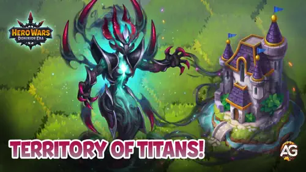
Guide du Territoire des Titans - Hero Wars: Dominion Era, un jeu développé par Nexters.
Qu'est-ce que le Territoire des Titans ?
Le Territoire des Titans (également appelé Titan AoC) est un événement de guilde construit sur les mêmes
mécaniques de conquête sur carte que l'Area of Conquest classique, mais avec un fort accent sur les ressources de titans.
Les Coffres d'amélioration de titan, les Potions de titan, l'Essence des éléments et les Catalyseurs Primordiaux/Élémentaires
figurent parmi les récompenses les plus importantes.
Pour participer, vous devez avoir rejoint votre guilde au plus tard trois heures avant le début de l'événement.
Les joueurs qui rejoignent la guilde après cette limite ne seront pas éligibles.
Informations générales – Comprendre les bases
Le Territoire des Titans partage les mêmes mécaniques de base que l'Area of Conquest.
L'objectif principal est d'aider votre guilde à collecter des Pièces Supérieures, des points spéciaux que toute votre
guilde gagne ensemble. Lorsqu'un nombre suffisant de pièces est collecté, le Niveau du Château de votre guilde augmente.
Chaque fois que le Niveau du Château augmente, tous les membres de la guilde reçoivent des récompenses.
Les pièces sont obtenues en capturant des colonies sur la carte, en gagnant des batailles et en ouvrant des coffres au trésor.
Quatre guildes de puissance similaire s'affrontent sur chaque carte, la coordination au sein de votre guilde est donc essentielle.
La particularité de cet événement est que de nombreuses missions et récompenses sont liées à des ressources spécifiques aux titans :
Coffres d'amélioration de titan, Potions de titan, Essence des éléments et Catalyseurs Primordiaux/Élémentaires sont les récompenses phares.
Coffres
Les coffres au trésor dans le Territoire des Titans accordent 100 Pièces Supérieures par membre de la guilde,
même si seuls les 100 premiers membres de la guilde comptent pour le score de classement. Les contributions des autres membres
servent tout de même à améliorer le château et alimentent aussi la conversion finale.
Les coffres apparaissent 15 minutes après le début de l'événement, puis toutes les
quatre heures. Ils n'apparaissent pas exactement au même endroit à chaque fois,
mais ont tendance à surgir dans des zones similaires de la carte.
Conversion finale
À la fin de l'événement, les Pièces Supérieures non dépensées peuvent être converties en d'autres récompenses.
Les taux de conversion exacts restent encore à confirmer.
Conseil : Dès que vous comprenez que votre guilde ne pourra plus améliorer le château avant la fin de l'événement,
il vaut mieux conserver vos pièces restantes pour la conversion finale plutôt que de les dépenser dans des améliorations
du château. Les dirigeants de la guilde peuvent décider d'annoncer cela au moment opportun.
Déplacements et points d'action (PA)
Chaque déplacement ou action sur la carte consomme des Points d'Action (PA). Les PA se régénèrent avec le temps,
donc en manquer n'est qu'un contretemps temporaire. Vous pouvez planifier à l'avance l'itinéraire de votre héros, qui continuera
automatiquement à se déplacer lorsque les PA seront restaurés. Vous pouvez annuler l'itinéraire à tout moment en cliquant sur la case
où vous souhaitez vous arrêter.
Batailles sur la carte
Les héros ne se soignent pas automatiquement entre les batailles. S'ils perdent des points de vie, ils restent affaiblis
jusqu'à ce que vous changiez pour une équipe fraîche ou que la bataille se termine. Pour lancer un combat, votre héros doit se trouver
sur une case adjacente à un ennemi, puis vous devez confirmer l'attaque.
Si votre équipe perd, vos héros sont téléportés au château de la guilde. Une victoire vous donne la colonie ennemie et commence à générer
des Pièces Supérieures pour votre guilde depuis cette case.
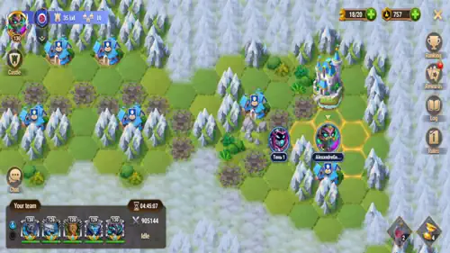
Territoire des Titans - Vue de la carte montrant les colonies et les positions des guildes.
Missions de l'événement – Objectifs étape par étape
Le Territoire des Titans propose 8 pistes de mission (dont une quotidienne). Accomplissez-les pour obtenir
des Pièces Supérieures, des Coffres d'amélioration de titan, des Potions de titan, de l'Essence des éléments et bien plus encore.
La quête Invocation des Grands se réinitialise chaque jour pendant l'événement.
1. Un accueil chaleureux – Connectez-vous pendant l'événement
Tableau : Un accueil chaleureux – Connectez-vous pendant l'événement
Tâche
Récompense
Se connecter 1 fois pendant un événement spécial
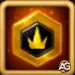
Pièce Supérieure x100
Se connecter 2 fois pendant un événement spécial
Pièce Supérieure x200
Se connecter 3 fois pendant un événement spécial
Pièce Supérieure x300
Se connecter 4 fois pendant un événement spécial
Pièce Supérieure x500
Total
Pièce Supérieure x1.100
2. Dépenses raisonnables – Obtenez des points VIP
Tableau : Dépenses raisonnables – Obtenez des points VIP
Tableau : Solution clairvoyante – Dépensez des émeraudes
Tâche
Récompense 1
Récompense 2
Dépenser 500 Émeraudes
-
Pièce Supérieure x150
Dépenser 1.000 Émeraudes
-
Pièce Supérieure x250
Dépenser 2.500 Émeraudes
-
Pièce Supérieure x350
Dépenser 5.000 Émeraudes
Accélérateur x1
Pièce Supérieure x500
Dépenser 10.000 Émeraudes
-
Pièce Supérieure x750
Dépenser 15.000 Émeraudes
Accélérateur x2
Pièce Supérieure x750
Dépenser 25.000 Émeraudes
-
Pièce Supérieure x1.250
Dépenser 35.000 Émeraudes
Accélérateur x3
Pièce Supérieure x1.500
Dépenser 50.000 Émeraudes
-
Pièce Supérieure x1.750
Dépenser 65.000 Émeraudes
Accélérateur x5
Pièce Supérieure x2.000
Dépenser 80.000 Émeraudes
Coffre d'amélioration de titan x1
Pièce Supérieure x2.500
Dépenser 100.000 Émeraudes
Coffre d'amélioration de titan x2
Pièce Supérieure x2.500
Dépenser 120.000 Émeraudes
Coffre d'amélioration de titan x4
Pièce Supérieure x3.000
Dépenser 150.000 Émeraudes
Coffre d'amélioration de titan x6
Pièce Supérieure x3.250
Dépenser 180.000 Émeraudes
Coffre d'amélioration de titan x6
Pièce Supérieure x3.500
Total
Accélérateur x11 · Coffre d'amélioration de titan x19
Pièce Supérieure x24.000
4. Soutien au combat – Ouvrez des Sphères d'artefact de titan
Tableau : Soutien au combat – Ouvrez des Sphères d'artefact de titan
Tâche
Récompense 1
Récompense 2
Ouvrir 5 Sphères d'artefact de titan
-
Pièce Supérieure x100
Ouvrir 10 Sphères d'artefact de titan
-
Pièce Supérieure x150
Ouvrir 25 Sphères d'artefact de titan
-
Pièce Supérieure x200
Ouvrir 50 Sphères d'artefact de titan
-
Pièce Supérieure x250
Ouvrir 75 Sphères d'artefact de titan
-
Pièce Supérieure x300
Ouvrir 100 Sphères d'artefact de titan
-
Pièce Supérieure x400
Ouvrir 150 Sphères d'artefact de titan
Potion de santé x1
Pièce Supérieure x500
Ouvrir 200 Sphères d'artefact de titan
Potion de santé x1
Pièce Supérieure x600
Ouvrir 350 Sphères d'artefact de titan
Potion de santé x1
Pièce Supérieure x700
Ouvrir 500 Sphères d'artefact de titan
Potion de santé x1
Pièce Supérieure x800
Total
Potion de santé x4
Pièce Supérieure x4.000
5. Invocation des Grands (quotidienne) – Effectuez des invocations dans le Cercle d'invocation
Cette quête se réinitialise chaque jour pendant l'événement. Accomplissez-la quotidiennement pour maximiser vos gains en Potions de titan.
Tableau : Invocation des Grands – Quête quotidienne (réinitialisée chaque jour)
Tâche
Récompense 1
Récompense 2
(Quotidien) Effectuer 10 invocations dans le Cercle d'invocation
-
Potion de titan x500
(Quotidien) Effectuer 20 invocations dans le Cercle d'invocation
-
Potion de titan x1.000
(Quotidien) Effectuer 30 invocations dans le Cercle d'invocation
-
Potion de titan x2.500
(Quotidien) Effectuer 40 invocations dans le Cercle d'invocation
-
Potion de titan x2.500
(Quotidien) Effectuer 50 invocations dans le Cercle d'invocation
-
Potion de titan x5.000
(Quotidien) Effectuer 60 invocations dans le Cercle d'invocation
-
Potion de titan x7.500
(Quotidien) Effectuer 80 invocations dans le Cercle d'invocation
Accélérateur x1
Potion de titan x10.000
(Quotidien) Effectuer 100 invocations dans le Cercle d'invocation
Accélérateur x1
Potion de titan x12.500
Total (par jour)
Accélérateur x2
Potion de titan x41.500
6. Exploits des conquérants – Dépensez des Pièces Supérieures
Tableau : Exploits des conquérants – Dépensez des Pièces Supérieures
Tâche
Récompense
Dépenser 2.000 Pièces Supérieures
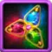
Essence des éléments x2.000
Dépenser 4.000 Pièces Supérieures
Essence des éléments x2.500
Dépenser 6.000 Pièces Supérieures
Essence des éléments x7.500
Dépenser 8.000 Pièces Supérieures
Essence des éléments x10.000
Dépenser 10.000 Pièces Supérieures
Essence des éléments x15.000
Dépenser 15.000 Pièces Supérieures
Essence des éléments x20.000
Dépenser 20.000 Pièces Supérieures
Essence des éléments x25.000
Total
Essence des éléments x82.000
7. Trésor de puissance – Gagnez des batailles dans l'Area of Conquest
Tableau : Trésor de puissance – Gagnez des batailles dans l'Area of Conquest
Tâche
Récompense
Gagner 1 fois après une attaque dans l'Area of Conquest
Pièce Supérieure x200
Gagner 2 fois après des attaques dans l'Area of Conquest
Pièce Supérieure x250
Gagner 3 fois après des attaques dans l'Area of Conquest
Pièce Supérieure x500
Gagner 5 fois après des attaques dans l'Area of Conquest
Pièce Supérieure x600
Gagner 10 fois après des attaques dans l'Area of Conquest
Pièce Supérieure x800
Gagner 15 fois après des attaques dans l'Area of Conquest
Pièce Supérieure x1.000
Total
Pièce Supérieure x3.350
8. Les sommets de la maîtrise – Tenez la colonie
Tableau : Les sommets de la maîtrise – Tenez la colonie
Tâche
Récompense
Tenir la colonie pendant 5 minutes
Pièce Supérieure x50
Tenir la colonie pendant 10 minutes
Pièce Supérieure x100
Tenir la colonie pendant 15 minutes
Pièce Supérieure x150
Tenir la colonie pendant 20 minutes
Pièce Supérieure x200
Tenir la colonie pendant 25 minutes
Pièce Supérieure x250
Tenir la colonie pendant 50 minutes
Pièce Supérieure x300
Tenir la colonie pendant 100 minutes
Pièce Supérieure x400
Tenir la colonie pendant 150 minutes
Pièce Supérieure x500
Tenir la colonie pendant 250 minutes
Pièce Supérieure x600
Tenir la colonie pendant 350 minutes
Pièce Supérieure x800
Total
Pièce Supérieure x3.350
Récompenses du classement
Le classement de votre guilde détermine les prix exclusifs que chaque membre reçoit à la fin de l'événement.
Seules les Pièces Supérieures collectées sur la carte comptent pour la position de votre guilde dans le classement.
Les meilleures guildes reçoivent des Catalyseurs Primordiaux et des Catalyseurs Élémentaires,
très utiles pour améliorer les titans.
Tableau : Récompenses du classement – Territoire des Titans
Rang
Récompense 1
Récompense 2
Récompense 3
#1
Catalyseur Primordial x50
Catalyseur Élémentaire x30
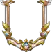
Cadre de guilde
#2
Catalyseur Primordial x30
Catalyseur Élémentaire x20
-
#3
Catalyseur Primordial x10
Coffre d'amélioration de titan x5
-
#4
Coffre d'amélioration de titan x5
-
-
Route vers le Sommet – Pass saisonnier
Faire progresser vos récompenses de la Route vers le Sommet se fait en accomplissant les quêtes de l'événement pour gagner
de l'expérience de saison. À chaque niveau, vous pouvez réclamer des récompenses exclusives. Le palier payant coûte 24,99 USD
et augmente considérablement les ressources de titan disponibles tout au long de l'événement.
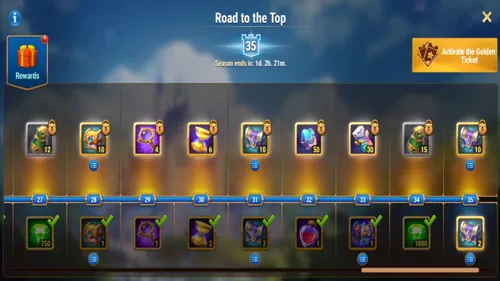
Route vers le Sommet - Suivez votre progression saisonnière et réclamez vos récompenses dans Hero Wars: Dominion Era.
Tableau : Route vers le Sommet – Récompenses cumulées gratuites et payantes
Récompense
Gratuit
Payant (24,99 USD)
Émeraudes
x3.250
-
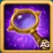
Mouvement d'explorateur
x2
x8
Coffre de ressources de titan
x6
x30
Pierre de skin de titan
x2.500
x50.000
Potion de titan
x2.500
x50.000
Essence des éléments
x2.500
x50.000
Accélérateur
x6
x18
Potion de santé
x4
x24
Coffre d'amélioration de titan
x14
x70 (+x10 bonus)
Sphère d'artefact de titan
x40
x250
Sphère d'invocation
x5
x50
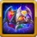
Titan de votre choix
x1
-
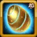
Oeuf d'invocation de familier
x10
-
Catalyseur Primordial
-
x50
Catalyseur Élémentaire
-
x30
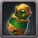
Poupée d'Émeraude I
-
x57
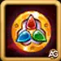
Pièce de tournoi élémentaire
-
x90.000
Points VIP
-
x2.400
Conclusion – Maîtrisez le Territoire des Titans
L'événement Territoire des Titans dans Hero Wars: Dominion Era est une excellente occasion pour les guildes de renforcer leurs alignements de titans tout en profitant de l'intense PvP inter-serveurs du format Area of Conquest. En accomplissant les 8 pistes de quête, en gagnant des Pièces Supérieures sur la carte et en coordonnant les invocations quotidiennes, vous pouvez collecter des Coffres d'amélioration de titan, des Potions de titan, de l'Essence des éléments et de précieux Catalyseurs Primordiaux/Élémentaires.
N'oubliez pas que les coffres apparaissent 15 minutes après le début de l'événement, puis toutes les 4 heures. Ne les manquez pas. Dès que votre guilde ne peut plus améliorer le château, gardez vos pièces pour la conversion finale. Le système de classement récompense le travail d'équipe : les guildes qui capturent et conservent le plus de colonies atteignent le sommet et remportent les meilleures récompenses, y compris le Cadre de guilde exclusif pour la guilde classée #1.
Restez actif, gérez intelligemment vos Points d'Action et gardez votre guilde coordonnée : vos efforts dans le Territoire des Titans se transformeront en puissance pour vos titans.
Avez-vous aimé notre guide de l'événement Territoire des Titans pour Hero Wars: Dominion Era ? Y a-t-il quelque chose que vous n'avez pas compris ou pour lequel vous aimeriez suggérer des changements ? Nous vous invitons à rejoindre notre section de commentaires sur la page du Blog Alexandre Games. N'hésitez pas à exprimer votre opinion, clarifier vos doutes et partager vos suggestions. Cliquez sur le bouton ci-dessous pour commencer :


 Guide de l'Île Mystérieuse - Comment obtenir un Drapeau de guerre ? Hero Wars (Web/FB)
Guide de l'Île Mystérieuse - Comment obtenir un Drapeau de guerre ? Hero Wars (Web/FB)
 Classement des meilleures compétences de fusion de totems de titans pour Hero Wars: Dominion Era
Classement des meilleures compétences de fusion de totems de titans pour Hero Wars: Dominion Era
") Hero Wars Dominion Era : Guides des personnages - Dominez avec chaque héros
Hero Wars Dominion Era : Guides des personnages - Dominez avec chaque héros
 Liste de rang des héros - Hero Wars: Dominion Era (Web et Facebook)
Liste de rang des héros - Hero Wars: Dominion Era (Web et Facebook)